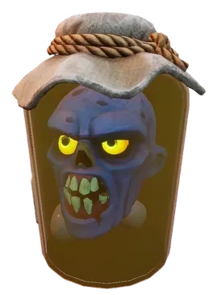

The Great Body Robbery is a secondary quest. It can be started by speaking to Doctor Fenkenstrain in the Bloodblight Swamp.
Overview
- Wooden or better Spade.
- 1x of each: Weak Antipoison potion, weak Focused Attack potion, weak Lumberjack potion
- Weak or better antipoison potions for traversing the Bloodblight Swamp.
- Good armour and food.
Walkthrough

To start this quest, speak to Doctor Fenkenstrain in the Bloodblight Swamp. He will be in his tower next to the garou camp around the bloodwood tree and on the same floor as the sanguine urn.
When you start talking to him, he will remark that they called him mad and that he'll show them. After a minute, he'll finally notice you and ask who you are. Choosing any option will result in him not caring who you are and asking you if you can help him out with something. He wants you to go collect some arms, legs, and that sort of stuff from graves all around the swamp. This will lead you to collect three items: Arms, Legs, Torso.
Locate graves by their headstones in the Bloodblight Swamp and use your spade/shovel near them to dig up a coffin. Interact with the coffin to collect the parts.
- Human Torso: Near the abyssal demon. In the centre of three trees.
- Goblin Legs: North of the torso coffin. Between two trees.
- Garou Arms: Near the northern entrance to the Bloodblight Swamp.
Once you have all of the items, return to the doctor. Speak to him, and he will make a pun about your unusual collection of body parts before asking you to place the parts on the examination table. Interact with the nearby examination table and speak to the doctor once more. He will ask you to examine the parts, and he will then ask you to bring him one weak antipoison potion, one weak Focused Attack potion, and one weak Lumberjack potion. Collect the potions and return to the doctor.
Use the potions (after speaking to the doctor again), and he will say that the body needs lightning, giving you an empty vial. You will need to get struck by lightning to fill the vial.
You can either wait for a thunderstorm event in nearly any of the regions, or head to the Stormtouched Highlands and wait to get struck by lightning. Once you have the Lightning-in-a-bottle, head back to the doctor.
Speak to him again, and he will ask you to put his head on the incomplete body on the examination table. Interact with the body to place the doctor's head on it, and then use the lighting-in-a-bottle on the nearby pylon. Once you interact with the nearby pylon, the doctor's head on the body will swap with the nearby chicken's head.
Speak to the doctor on the chicken's body to learn that he miscalculated. He will then give you your reward to distract you while he works out his tricky situation.
Congratulations! Quest complete!
Rewards
- 1x zombie arm
- Recipe to build a Lightning rod
Required to complete
This quest is not required to complete any quests.
Trivia
- This quest is named after RuneScapes and Old School RuneScapes quest, The Great Brain Robbery.
- This quest is the longest secondary quest, according to Jagex.
- There is a bug that seems to soft-lock most players during the quest's dialogue.
This guide is the wiki's The Great Body Robbery article, by its editors, reformatted for this site. Licensed CC BY-NC-SA 3.0.